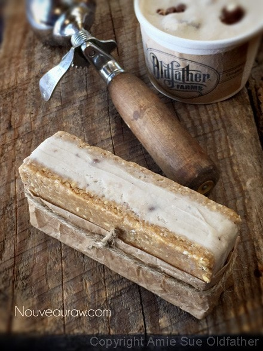

Peanut Butter Chocolate Chip Ice Cream Sandwiches

~ raw, vegan, gluten-free, dairy-free ~
I spent a significant portion of my life living in Alaska and just never broke down to make Eskimo Ice Cream. (shakes head in disbelief) I mean really, how could I have overlooked such a thing.
Check out the ingredients needed: 4 Cups seal oil, 1-1/2 pounds reindeer fat, berries of your choice, and snow! But because I missed out on such a….unique opportunity (rolls eyes and shutters), I decided to make up for it by making some Peanut Butter Chocolate Chip Ice Cream Sandwiches instead. A wise decision I think. Perhaps a more palatable decision. haha
Being my first attempt at making ice cream sandwiches, I must say they came out OK in the appearance department but OUTSTANDING in the flavor department. I am not used to taking photos of such volatile ingredients. Give me a little bit more time, a walk-in freezer for a photo studio and some extra experience, and I will get a much better snapshot.
I will warn you….these are big, not so much big in size but in flavor and nutrients. We find that a full bar is almost too much to eat in one sitting. So I would recommend cutting them in half before storing them in the freezer. It has been my experience and of others as well, that because raw dishes are packed full of life, nutrients, and richness of flavor, a person tends to eat less.
The feeling of being satisfied is fulfilled much quicker. When we eat foods that come from boxes, foods that are filled with unpronounceable ingredients, not to mention many foods lose so much of their nutritional value when cooked…that we when we eat these foods our bodies are chasing, searching for more nutrients, thus we eat more. You know the saying of “eating empty calories,” I say “eating empty nutrients!” Well, that’s my theory, and I am sticking to it. :)
 Ingredients:
Ingredients:
Peanut butter cookie base:
- 3 cups gluten-free, rolled oats
- 1 tsp Himalayan pink salt
- 1 cup almond butter
- 1/2 cup maple syrup
- 1/4 cup raw honey
- 1/4 cup cold-pressed coconut oil
- 1 1/2 tsp almond extract
Ice cream base:
Preparation:
Peanut butter cookie base:
- Place the oats and salt in the food processor, fitted with the “S” blade. Process until it reaches a flour-like texture.
- Add the almond butter, maple syrup, honey, coconut oil, and extract. Process until the batter starts to roll into a large ball.
- If the batter feels really dry, add a tablespoon of water.
- Form balls, roll in the crushed almonds, and lightly flatten.
- You can eat these right away or dehydrate them at 115 degrees (F) for up to 8 hrs.
- They won’t become crispy. But the outsides will firm up some.
- Store in an airtight container on the counter for 1 week, in the fridge for 2 weeks, or in the freezer for up to 3 months. Be sure that they are sealed, so fridge and freezer odors don’t get absorbed into them.
Ice cream base:
- In a high-speed blender, combine the almond milk, coconut, sweetener, vanilla, coconut oil, and. Blend until nice and creamy.
- Due to the volume and the creamy texture that we are going after, it is important to use a high-powered blender. It could be too taxing on a lower-end model.
- Blend until the filling is creamy smooth. You shouldn’t detect any grit. If you do, keep blending.
- This process can take 2-4 minutes, depending on the strength of the blender. Keep your hand cupped around the base of the blender carafe to feel for warmth. If the batter is getting too warm. Stop the machine and let it cool. Then proceed once cooled.
- Place the blender carafe in the fridge or freezer for 1 hour.
- If chilled in the fridge it can stay there for up to 8 hours. But don’t leave it in the freezer for more than an hour or it will freeze solid.
- Once chilled pour the batter into the ice cream maker and follow the manufacturer’s instructions.
- Once the ice cream has gone through the ice machine add the chocolate chips and stir.
Assembly:
Ice cream sandwich mold:
- Using your ice cream sandwich mold, you will build your sandwich in layers.
- Start with the bottom, which will be your cookie layer.
- Secondly, spread your ice cream in.
- Now you can top it with your top cookie.
- You will then press all three layers together, gently.
- Remove from mold and freeze.
- Eat within 1 month.
Cookie sheet option:
- Line a baking sheet with plastic wrap.
- Press half of the cookie dough in the bottom, rolling it out nice and even.
- Spread a layer of ice cream on top and freeze.
- Once frozen solid, press the other half of the dough on top of the ice cream. Return to freezer.
- Remove from the pan and slice into bar shapes.
Oat Information:

© AmieSue.com